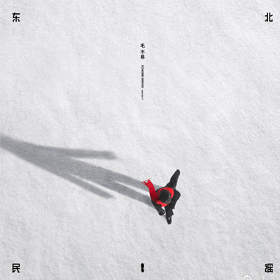

最喜欢的歌 - 东北民谣
《东北民谣》这首歌，灵感来源于一个凄美的故事：东北一对青梅竹马的恋人，男孩后来出去打工，临行前答应女孩明年过春节的时候就回来娶她。女孩相信了 他的话，一直在家里等着男孩，谁知这一等，等到了头发发白还是没见人，哪怕后来患上了老年痴呆症人她还记得要等他。特别是每年过年听到家家户户放的鞭炮， 她总会以为是男孩回来娶她。而那个男孩后来过得怎么样，他是生、是死，是飞黄腾达、移情别恋，还是一生失落、无颜归乡，谁也不知道。
整首歌里溢满了红色，也溢满了热烈，但这首歌写了个什么故事呢？写了一个悲剧的故事，一个正儿八经的悲剧。以红写白，以热写冷，以烈写哀。这所有的红是 为了渲染一场想象中的婚礼，一场一个暮年老人形单影只的婚礼。
这首歌毛不易明明写的是一个老人回忆往昔，但通篇都是姑娘。时光使美人白头，但有情人不会，她和他在这个年轻人写的故事里永远年轻，永远鲜活。在他的歌里， 不被祝福的感情终将以某种形式圆满，一道彩虹两个人也好，今生我只与你成双也好，都是一定意义上的成全。毛不易很会写以小见大的歌，这一首便是小人物的盛大。 他的歌，天地万物皆可借，借来去成全世间最普通的个体，我们该为这种胸襟鼓掌。
如果这首歌有个主题的话，我就会选择“成全”这个词。世事皆难完满，那就用一首歌弥补遗憾，就在东北的冰天雪地与锣鼓声声里为这一生爱恋落下最圆满句点。